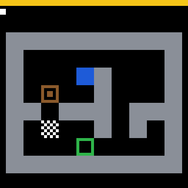

We generate new test worlds and verify each puzzle.
We combine 21 physical rules, including pressure plates, locked gates, pits, ice, and switches. Each level changes how the room works without telling the AI what changed.
- Every puzzle can be solved: A computer finds a winning path before the AI sees the board. All 1,000 checks passed.
- Players must use the new rule: Ignoring it leads to failure.
- Guessing rarely works: Random moves win less than 2% of the time. Colours change each game to prevent memorizing tiles.





Try the puzzle yourself in 60 seconds.
Scan the code to see what the robot sees. There are no instructions. Try a move, watch what changes, work out the rule, then compare your play with leading AI models on the same board.

/challenge. There are no instructions. Make a move, watch how the gate reacts, and work out how to clear the room. Then compare your run with recorded AI play on the same board.The AI knew the rule in 117 failed levels.
Across 215 failed levels with a new rule, the AI described the rule correctly in 117 but could not find a way around the obstacle. This was 64% of failures when it could remember earlier moves.
/insights
Knew rule at move 18 Failed route at move 27
What went wrong: The AI figured out that the yellow plate opens the door, but miscounted the route around the pit. It pushed into a wall 14 times before the battery ran out.

Open a failure to see the exact mistake in the replay.